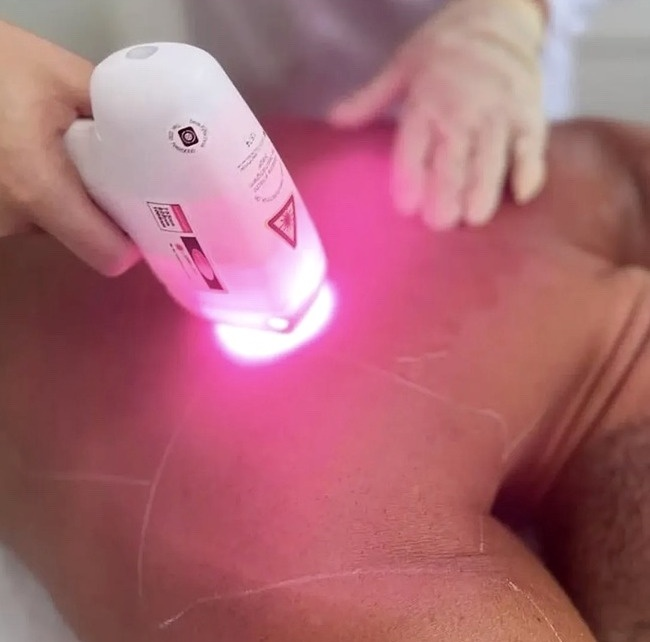
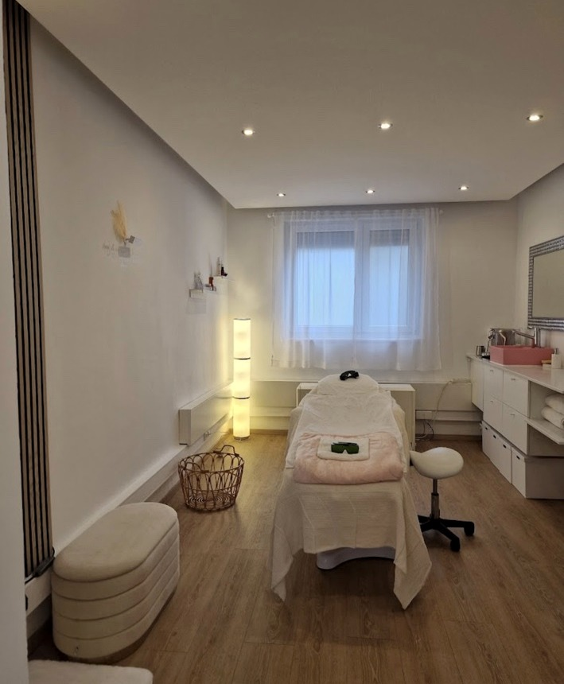

Individuelle Zonen
Wähle einzelne Bereiche wie Gesicht, Achseln oder Beine – oder informiere dich über eine Ganzkörperbehandlung.
Lindoju Beauty · München
Langanhaltend glatte Haut: Entdecke die Laser-Haarentfernung mit Diodenlaser bei Lindoju Beauty für Frauen und Männer.
Informiere dich zu möglichen Behandlungszonen und Preisen und frage deinen persönlichen Termin in unserem Beauty Studio in München an.

Laser-Haarentfernung mit Diodenlaser
Bei der Laser-Haarentfernung werden gezielt Haarstrukturen behandelt, um das Nachwachsen zu reduzieren. Welche Körperzonen sinnvoll sind und wie viele Termine benötigt werden, hängt unter anderem von Haut- und Haartyp ab.
Wähle einzelne Bereiche wie Gesicht, Achseln oder Beine – oder informiere dich über eine Ganzkörperbehandlung.
Für die Haarentfernung nutzt Lindoju Beauty Diodenlaser-Technologie. Möglichkeiten und Grenzen werden individuell besprochen.
Fragen zum Ablauf, zu Preisen und zur Eignung kannst du vor einem Termin direkt mit dem Studio klären.
Ablauf & Erwartungen
Für eine erfolgreiche Planung sind Haut- und Haartyp sowie die gewünschte Körperzone wichtig. Häufig sind mehrere Behandlungen mit zeitlichem Abstand nötig. Ein vollständig haarfreies Ergebnis kann nicht garantiert werden.
Besprich vorab gesundheitliche Besonderheiten, Medikamente und aktuelle Hautreizungen mit dem Studio. Die Behandlungseignung sollte individuell geklärt werden.

Preise · Laser-Haarentfernung München
Die folgenden Beispielpreise stammen aus unserer veröffentlichten Preisliste für Frauen. Für Männer und weitere Behandlungszonen findest du die vollständige Übersicht auf der Startseite.
Preise gemäß Website-Preisliste; bitte bei der Terminvereinbarung bestätigen. Behandlungsumfang und Eignung werden individuell geklärt.
Alle Behandlungen und Preise auf der Startseite ansehenGut zu wissen
Häufig sind mehrere Termine erforderlich. Die Anzahl hängt von Haarwachstum, Körperzone und individuellen Faktoren ab. Das Studio kann dir dazu nähere Informationen geben.
Ja, Lindoju Beauty bietet Laser-Haarentfernung für Frauen und Männer an. Die verfügbaren Zonen und Preise unterscheiden sich teilweise.
Die Preisliste enthält beispielsweise Gesicht, Oberlippe, Achseln, Arme und Beine. Weitere Zonen und Preise findest du auf der Startseite.
Du findest Lindoju Beauty in der Corneliusstraße 38, 80469 München. Für Terminanfragen nutze bitte Telefon oder WhatsApp.
Weitere Angebote
Dein Termin in München
Wir helfen dir gerne bei der Auswahl einer passenden Behandlung und bei deiner Terminanfrage. Du erreichst uns direkt telefonisch oder per WhatsApp.